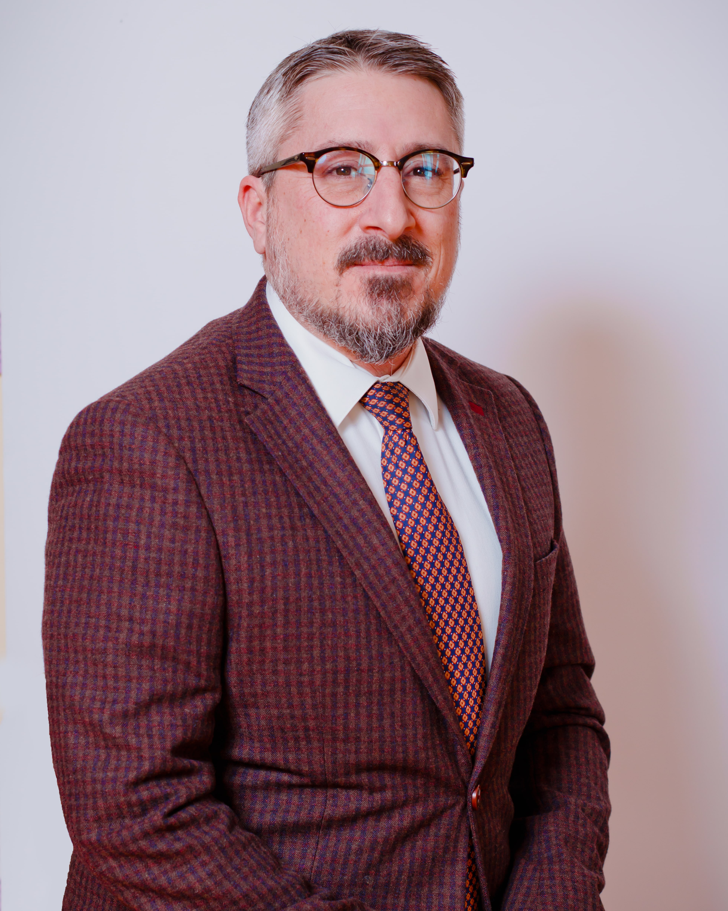

Уважаемые коллеги, дорогие ученики и родители!
В международной школе «Мирас» интернациональное мышление — это основополагающий компонент образовательной философии, который реализуется посредством интеграции стандартов и подходов двух образовательных систем -казахстанской и международной.
Начальная школа (от 3 до 11 лет) аккредитована Организацией Международного Бакаллавриата (IB), что дает нам право работать по Программе Начальной школы (PYP). Эта международная программа, основанная на исследовании, интегрирована с Казахстанскими образовательными стандартами с целью создания всестороннего и структурированного трансдисциплинарного подхода к обучению. Наши преподаватели — это высококвалифицированные и преданные своему делу педагоги из Казахстана и других стран.
Наша общая цель заключается в воспитании пытливых, знающих и заботливых студентов, которые внесут свой вклад в развитие лучшего и более спокойного мира.
Джаред Табита
Директор Начальной школы